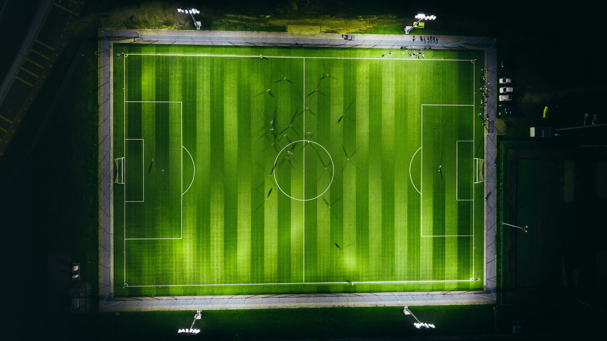

Fotbalul se joacă conform Legilor Jocului, cu două echipe de câte 11 jucători care încearcă să introducă mingea în poarta adversă. Echipa care înscrie mai multe goluri câștigă, iar dacă scorul este egal, meciul se termină la egalitate. Mingea nu poate fi atinsă cu mâna, cu excepția portarului sau la aruncările de la margine (aut). Jucătorii se pot folosi de orice parte a corpului pentru a controla mingea. Jocul include driblingul, pasarea și șutul, iar echipa adversă poate recupea mingea prin interceptări sau deposedări. Contactul fizic este limitat. Jocul se oprește atunci când mingea părăsește terenul sau când arbitrul fluieră, iar reluarea se face prin auturi, cornere sau lovituri de la 11 metri.
În 2011, Lionel Messi a fost desemnat cel mai bun fotbalist al anului.
